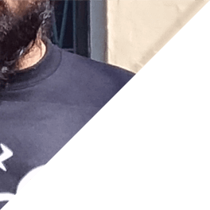
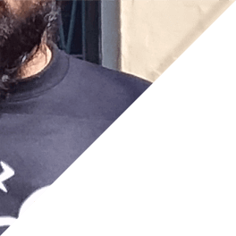

Hi, My Name is Saad Khan
I am a Graphic Designer and Full-Stack Developer, with eight years of experience in the former and four years in the later.
I have a Software Engineer degree. I am logically solid and a problem solver.
As a Graphic Designer, I have a real affinity for Logo and Creative Design. Over the years, I’ve dabbled in a host of design styles and categories.
As a Full-Stack Developer I focus on mobile-first, responsive, minimal and lightweight web applications. I am well versed in the use of HTML5, CSS3, JavaScript, Node.js along with it's various frameworks and libraries, and SQL Databases.
I am a decent Content Writer. When I don't have to write about myself that is. Check out my blog for an accurate representation of my writing prowess. It's pretty meh.
I have a passable knowledge of basic Video Editing and Animations.
I am logical, enthusiastic and articulate, and would love to add to my reputation given the chance.
SKILLS
Check out my Personal Website / Workshop / Idea Dump to see more examples of my web development abilities and / or to know more about me.